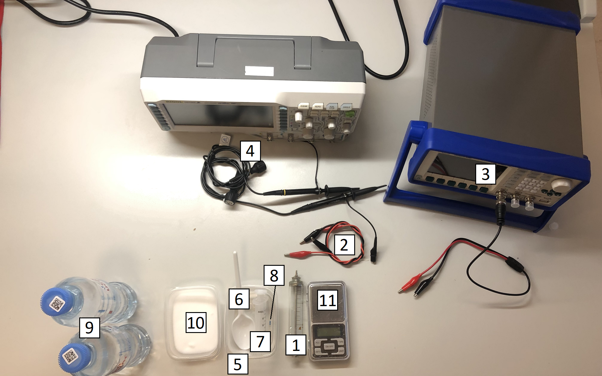
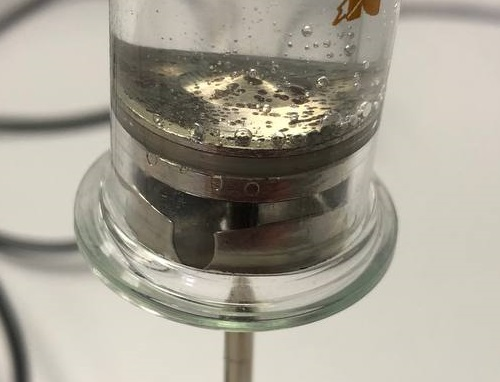
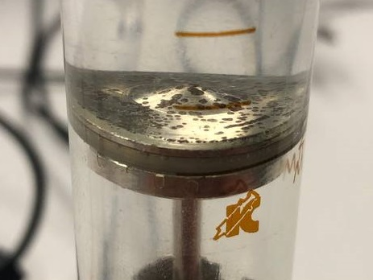
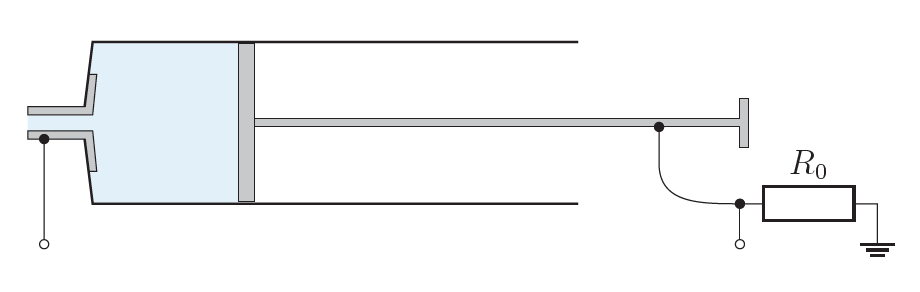
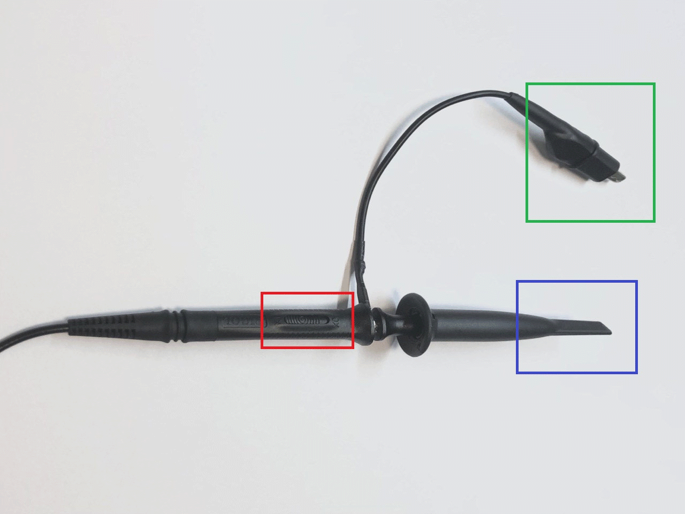
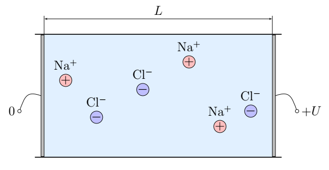
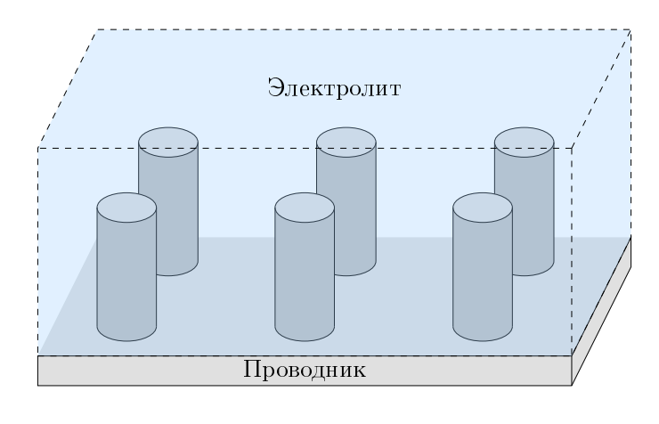
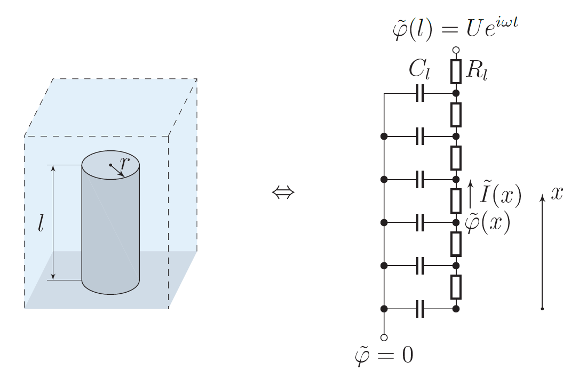

X23 (2023) — English translation
Electrolytes are substances that conduct electric current due to dissociation into ions. Their electrical conductivity is determined by the mobility of positively and negatively charged ions. A system consisting of a container with an electrolyte and a solid membrane immersed in it is called an electrode-electrolyte interface. This system has unique electrical properties, which are widely used in the creation of lithium-ion batteries and ionistors (supercapacitors). In this problem we will consider the basic properties of the electrode-electrolyte interface. The electrolyte will be a solution of table salt $\rm Na Cl$ in water. Throughout the problem, we will consider this solution as a suspension of $\rm Na^+$ and $\rm Cl^-$ ions in a liquid dielectric. The membrane in the problem is the surface of the steel piston and the spout of the syringe; throughout the entire problem, we will consider steel to be an ideal conductor, the conductivity of which is much greater than the conductivity of the electrolyte. The following constants may be useful for solving the problem:
A system consisting of a container with an electrolyte and a solid membrane immersed in it is called an electrode-electrolyte interface. This system has unique electrical properties, which are widely used in the creation of lithium-ion batteries and ionistors (supercapacitors). In this problem we will consider the basic properties of the electrode-electrolyte interface.
The electrolyte will be a solution of table salt $\rm Na Cl$ in water. Throughout the problem, we will consider this solution as a suspension of $\rm Na^+$ and $\rm Cl^-$ ions in a liquid dielectric. The membrane in the problem is the surface of the steel piston and the spout of the syringe; throughout the entire problem, we will consider steel to be an ideal conductor, the conductivity of which is much greater than the conductivity of the electrolyte.
The following constants may be useful for solving the problem:
Elementary charge $e=1.602\cdot10^{-19}~\text{Кл}$ Avogadro's number $N_A=6.02\cdot10^{23}$ Molar mass $\rm Na$ $\mu_{\rm Na}=23.0~\text{г}/\text{моль}$ Molar mass $\rm Cl$ $\mu_{\rm Cl}=35.4~\text{г}/\text{моль}$ Molar mass $\rm H$ $\mu_{\rm H}=1.0~\text{г}/\text{моль}$ Molar mass $\rm O$ $\mu_{\rm O}=16.0~\text{г}/\text{моль}$
Attention! The problem does not require error estimation. Attention! Use a personal lamp to illuminate your work area. Equipment: Steel syringe. Two alligator-crocodile wires. Generator with wire for generator. Oscilloscope with two oscilloscope leads. Three plastic containers. Disposable spoon Plastic syringe for preparing solutions Resistor $R_0=22.0~\text{Ом}$. $1~\text{л}$ water for preparing solutions (not drinking), bottles are marked with a blue cross. $150~\text{г}$ salt inside the Libra container. Ruler (from the equipment of problem E2).
Attention! The problem does not require error estimation.
Attention! Use a personal lamp to illuminate your work area.

Within the framework of the problem, we will denote the concentration of a salt solution in water by the dimensionless quantity $c = \dfrac{m_\text{соли}}{m_\text{воды}}$, where $m_\text{воды}$ is the mass of the initially taken clean water, $m_\text{соли}$ is the mass of salt powder added to clean water to obtain a solution. Prepare a salt solution with a concentration of $c\approx 0.07$. Draw this solution into the syringe, and to avoid the formation of excess bubbles inside the syringe, move the plunger slowly. When taking measurements, you need to hold the syringe in some fixed position (for example, standing on the piston stem) so that the configuration of the bubbles that form one way or another is the same.
Bubbles in the solution inside the syringe caused by the plunger moving too quickly.

The solution inside the syringe is free of bubbles.

Throughout the task we will be studying the electrical properties of the electrolyte solution inside the syringe, so we should use the circuit shown in the figure. Attention! Under no circumstances should the oscilloscope wires and generator wires directly touch the glass syringe if you have already filled it with water.
Attention! Under no circumstances should the oscilloscope wires and generator wires directly touch the glass syringe if you have already filled it with water.

Use the generator in mode $V_{\text{pp}}=1.00~\text{В}$, where $V_\text{pp}$ is the voltage difference between peaks (double signal amplitude). Be sure to remember to turn on the signal at the output of the generator: Generator AKIP-3408 – “Output” button Generator AKIP-3407 – button “Output” Generator UTG2025 – button “CH1” or “CH2” depending on which channel you use. Generator UTG9020 – automatically turned on. The current in our system can be significantly noisy (this is the so-called electrochemical noise, which is symmetrical in the positive and negative regions), so any voltage amplitudes should be measured in the Cursor mode in manual mode and not rely on the Measure module. To measure the voltage on the syringe, be sure to obtain it as a signal using the Math module in subtraction mode. To work with the Math module: Click the “Math” button. Click the Math button a second time, or click the button corresponding to ExpandOper. In order for the Math channel to be equal to CH1-CH2, there must be the following correspondence: “Formula” - “A-B” “Action” - “On” “Source A” - “CH1” “Source B” - “CH2” When everything is configured, and you are in another window, for example Cursor, to change the scale of the Math channel, follow steps 1 and 2, and then adjust the scale with the same knob that changes the scale of ordinary channels (Vertical Scale). For CH1 and CH2, check that the Probe setting matches the probe mode that uses the probe. If it doesn't match, adjust it.
The current in our system can be significantly noisy (this is the so-called electrochemical noise, which is symmetrical in the positive and negative regions), so any voltage amplitudes should be measured in the Cursor mode in manual mode and not rely on the Measure module.
To measure the voltage on the syringe, be sure to obtain it as a signal using the Math module in subtraction mode.
To work with the Math module:
When everything is set up and you are in another window, for example Cursor, to change the scale of the Math channel, follow steps 1 and 2, and then adjust the scale with the same knob that changes the scale of regular channels (Vertical Scale).
For CH1 and CH2, check that the Probe setting matches the probe mode that uses the probe. If it doesn't match, adjust it.
Oscilloscope probe (do not use it to output the signal from the generator). The probe mode switch is highlighted in red. Green highlighted contact "Ground" The "Signal" contact is highlighted in blue.

At frequency $f\approx50~\text{кГц}$ the phase difference between the current through the syringe and the voltage across it is practically zero. This means that at this frequency the electrolyte solution inside the syringe behaves like a resistance $R$. It is expected that this resistance changes as the length $L$ of the electrolyte inside the syringe changes.
Prepare 4 different salt solutions with concentrations $0.07 \leq c \leq 0.20$. When changing the concentration of the solution inside the syringe, be sure to rinse it with clean water.
The theoretical description of the results obtained follows from the standard problem of conductivity of the second kind: consider the action of an electric field on a charged particle in a viscous medium. Let the mass of the particle be $m$ and the charge $q$, and if the particle moves, then the force of viscous friction $F=-kv$ acts on it.
The viscosity coefficient $k$, with which we model the movement of ions in a solution, is associated not only with viscosity, but also with the electrical properties of water and depends on the concentration of ions: \[ k \propto n^{\alpha}, \] where $\alpha$ is an unknown degree, the same for ions $\rm Na^+$ and $\rm Cl^-$. Let an electrically neutral solution of table salt be inside a cylindrical vessel with conducting electrode bases and non-conducting walls. The area of the bases is $S$, the distance between them is $L$. We will assume that ions $\rm Na^+$ and $\rm Cl^-$ in any quantity can appear and disappear as a result of chemical reactions with electrodes. The ion charges coincide in absolute value with the elementary charge $e=1.602\cdot10^{-19}~\text{Кл}$.

Let us denote by $n$ the concentration of sodium ions, by $k_{\rm Na^+}$ and $k_{\rm Cl^-}$ the viscosity coefficients for sodium and chlorine ions, respectively.
In practice, the study of direct current is associated with the following difficulty: due to chemical reactions, the bases of the cylinder are gradually destroyed/covered with a film. Therefore, it is much more convenient to study conductivity with alternating current. Let us carry out a theoretical analysis within the framework of our model.
The case considered in $\textbf{B8}$ obviously corresponds to the measurements made within the framework of points $\textbf{A2}$ and $\textbf{B1}$.
The $\mu_\text{эфф}$ obtained in the experiment differs significantly from the theoretical value. This difference can be explained by the fact that water molecules, which have a dipole moment, are attracted to the ions (solvate them) and move with them. Let us denote the number of water molecules moving together with an ion of any type by $N$. In this case, instead of $\mu_{\rm Na}$ when calculating, you need to use $\mu_{\rm Na}+N\mu_{H_2O}$ and instead of $\mu_{\rm Cl}$ you need to use $\mu_{\rm Cl} + N \mu_{H_2O}$
The electrolyte syringe also has a capacity that cannot be predicted by volumetric theory. This capacity begins to affect itself at low frequencies of the signal supplied to the ends of the syringe. The capacitance of the electrode surface-electrolyte system is due to the fact that ions (like any charged particles) are attracted to the metal surface and form the so-called. electrical double layer. Thus, a unit of surface contact between the metal and the electrolyte has a capacity of $\sigma = \frac{dC}{dS}$, where $C$ is the capacitance of a surface with an area of $S$. Fill the syringe with a solution with a salt concentration of $c\approx 0.20$.
For analyzing an electrical circuit, the so-called Nyquist diagram - dependence of $\mathfrak{Im} \tilde{Z}$ on $\mathfrak{Re} \tilde{Z}$. In our case, we can assume that volumetric effects are reduced to a resistor with resistance $R_2$, and surface effects are expressed from measurements as follows: $\tilde{Z}_\text{п} = \tilde{Z} - R_2$.
The previously described model of the formation of capacitance $C$ at the contact surface of the electrolyte and metal, if this surface is flat, should be reduced to the fact that surface effects have a Nyquist diagram, like a capacitor, but experiment contradicts this thesis. While analyzing a similar problem, the Danish chemist Robert de Levy proposed a model of a rough metal surface, which turned out to be very fruitful for describing the electrical properties of electrode-electrolyte interfaces.

Let us imagine the surface of the conductor as a plane on which cylinders of height $l$ and radius $r$ stand. The density of the cylinders can be described by the surface density $\xi = \frac{dN}{dS}$, where $N$ is the number of cylinders in the area $S$. In this case, per cylinder there is $1/\xi$ area of the electrolyte around it. In this case, the unit height of the cylinder has a certain capacity $C_l$ and the unit height of the electrolyte per cylinder has a certain resistance $R_l$. To shorten the entries, let us denote the specific resistance of the electrolyte as $\rho$.

Note 1: To find two numbers $a$ such that $a^2=\sqrt{i}$ you can use Euler’s formula. Note 2: $\cos x = \cosh ix$, $i \sin x = \sinh ix$, $i \tan x = \tanh ix$, $\tanh(x \pm y) = \dfrac{\tanh x \pm \tanh y}{1 \pm \tanh x \tanh y}$.
Note 2: $\cos x = \cosh ix$, $i \sin x = \sinh ix$, $i \tan x = \tanh ix$, $\tanh(x \pm y) = \dfrac{\tanh x \pm \tanh y}{1 \pm \tanh x \tanh y}$.
We will assume that $\xi=40~\frac{1}{\text{мм}^2}$, $r=0.6~\text{мкм}$. Consider the contact area of the syringe nose with the electrolyte to be $5.5$ times less than the area of the internal cross-section of the syringe.
Source: https://pho.rs/p/3156